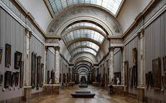
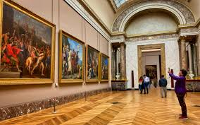
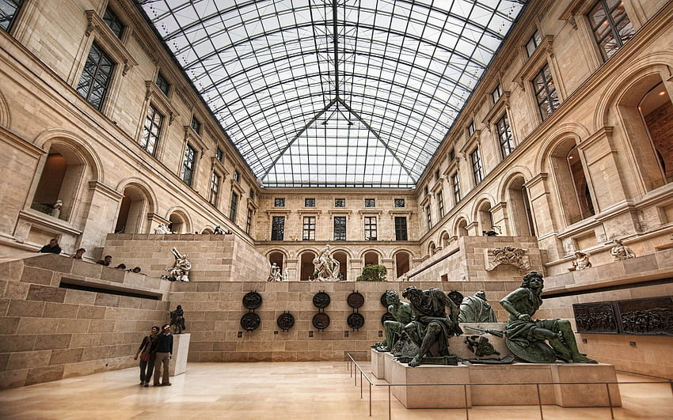

El Museo del Louvre es uno de los museos más famosos y visitados del mundo, ubicado en París, Francia. Fundado en 1793 como un museo de arte público, el Louvre es el hogar de algunas de las obras de arte más importantes e icónicas de la historia, incluyendo la Mona Lisa de Leonardo da Vinci y la Venus de Milo. La historia del Museo del Louvre se remonta al siglo XII, cuando se construyó el castillo del Louvre como fortaleza para proteger París. En el siglo XIV, Carlos V transformó el castillo en una residencia real, y en el siglo XVI, Francisco I lo convirtió en un museo de arte real. En 1793, la Revolución Francesa convirtió el Louvre en un museo público, y se abrió al público en general para mostrar las obras de arte de la monarquía francesa confiscadas durante la revolución. Desde entonces, el museo ha ido creciendo y transformándose, y hoy en día, cuenta con más de 38,000 objetos de arte y antigüedades en sus ocho departamentos, que van desde el arte egipcio y griego hasta la pintura europea y la escultura. El edificio actual del Louvre es un ejemplo destacado de arquitectura moderna, con su famosa pirámide de vidrio y acero diseñada por el arquitecto I.M. Pei. El museo sigue siendo uno de los destinos turísticos más populares del mundo, recibiendo millones de visitantes cada año.
La parte central del museo es el Palacio del Louvre, que se remonta al siglo XII. Es un edificio imponente con una arquitectura renacentista y barroca. El palacio fue inicialmente una fortaleza y luego se convirtió en la residencia real francesa antes de ser transformado en un museo en 1793. El Palacio del Louvre tiene varias alas, siendo la más conocida la Gran Galería, que alberga la famosa pintura Mona Lisa de Leonardo da Vinci. Además del Palacio del Louvre, el museo se ha expandido a lo largo de los años con la incorporación de nuevas estructuras. Una de las adiciones más destacadas es la pirámide de vidrio diseñada por el arquitecto I.M. Pei. La pirámide se encuentra en el patio central del museo y sirve como entrada principal, conectando las diferentes áreas del museo subterráneamente. El museo se divide en ocho departamentos principales, que abarcan diferentes áreas temáticas, como antigüedades egipcias, a ntigüedades orientales, antigüedades griegas y romanas, esculturas, pinturas, artes decorativas y arte islámico. Cada departamento tiene salas y galerías dedicadas a exhibir las obras de arte y objetos históricos relacionados.